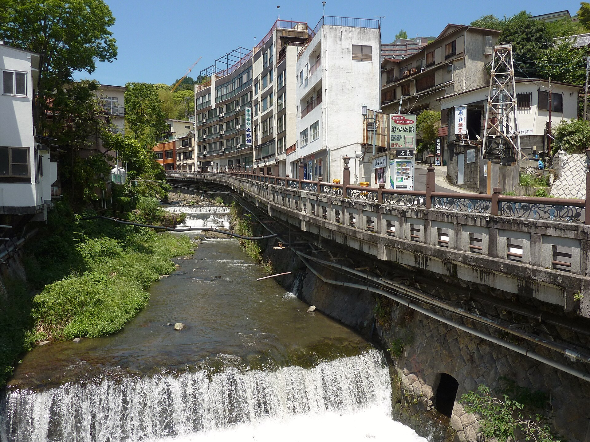
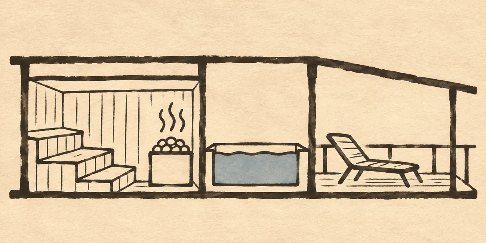

湯河原の湯が、
駅前にある。
万葉集にも詠まれた関東一の古湯、湯河原の奥座敷「神谷温泉」。その三本の自家源泉から、湯を毎日ここまで運んでいます。
- 歴史
- 1300年
- 源泉
- 神谷温泉
湯冷めしにくい
湯河原の湯は、古くから湯上がりに体が冷えにくいと言われてきました。寝る前に入る日に向いています。
「傷の湯」
打ち身や傷によいとされ、古くからこう呼ばれてきました。江戸時代の温泉番付では、東の小結。
「美肌の湯」
湯あがりに肌がしっとりするとされ、こうも呼ばれます。
運ぶところを、撮ってきました。
源泉から、山を越えて、駅前まで。55秒。画面に入ると音なしで始まります。音は右下のボタンから。

入って帰る。泊まる。
整える。
どの使い方でも、湯は同じ奥湯河原の湯です。


お知らせとイベント
2027年春、相模大野に開業します
奥湯河原の湯を毎日運ぶ、日帰り温泉とカプセルホテルです。開業日とご予約の受付が始まる日は、決まり次第ここでお知らせします。
開業までの様子と、開いてからのイベントを流します。Instagram を更新すると、ここにも出るようにしています。
いつ来ますか。
来る時間で、入れるコースと料金が変わります。いまの時間に合わせて開いています。
いつ来るかで、料金が変わります
泊まる
カプセルベッド 平日¥3,300
カプセルベッド 金土・休前日¥3,800
寝ないで朝まで(夜間入浴)¥2,700
エアウィーヴ・枕・シーツ付き。15:00 チェックイン、10:00 チェックアウト。朝風呂に入ってから出られます。
夜だけ 70分
夜間ひとっ風呂(70分)¥700
21:00 から翌 5:00 のあいだの70分。日曜の男性と月曜の女性は翌 2:00 まで。2階はご利用いただけません。10分以上の超過は +¥500、以降1時間ごとに +¥500。

開業のお知らせ
開業日と、ご予約の受付が始まる日を、先にお送りします。お送りするのは開業までのあいだだけです。